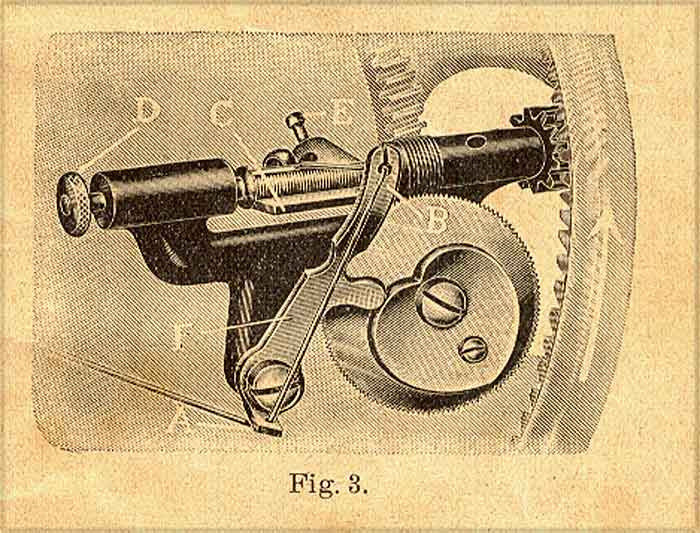

The machine is supplied with the wormgear winder Fig. 2 and Fig. 3, which releases itself automatically when the bobbin is full. The Bobbin-wormgear-winder is very easy to work, not exposed to any interruptions and gives a tight and clean convoluted bobbin.
The thread is passed through the tension disks 5 Fig. 2, then first through the eye A of the thread-guide F Fig. 3 and secondly through the eye B of same.
When inserting the bobbin press the flap C of Fig. 3 down, pull back the piston D and insert first one end of the bobbin, then the other so that the small pin on the right side passes into the hole of the bobbin. The end of the thread is passed through this little hole from left to right and jammed between this end of the bobbin and the winder.
Take care that the thread-guide F Fig. 3 is in position to the right hand in order to obtain a fully and smoothly filled bobbin. By lightly pressing the winder to the front it is set in motion. It will be found that the winder releases itself as soon as the bobbin is full.
Should the bobbin get too full, turn the little regulating screw E of the flap C to the left, or if it does not get full enough turn the same screw a little to the right.
If you do not understand it properly, ask for the advice of an expert, so that the apparatus is not spoilt through ignorance.